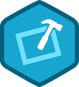
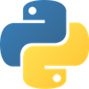

Who am I? | |
| I am a French and American citizen currently studying in France. I made my first iOS app in 2011, and made a few more since then. I especially like creating user-interfaces: my goal is to design software which improves people’s everyday life by being so intuitive that it becomes unnoticeable while still fulfilling its purpose. |
What are my occupations? | ||
|  |
I develop iOS games and utility apps using Xcode. You will find in the iOS section of my projects. I also developed multi-platform python apps, which are available at github.com/JRock007. I have basic skills in html and css, as I created a website for a school project. By working on different projects, I have learned teamwork, forward planning (by setting weekly goals for the team) and organization. I also practice mountain bike, and like skiing and playing badminton. |
iOS | |
|
I created several iOS apps, some of which are available on the app store: • Elogger, a companion app to Elog, a multi-fluid data logger monitoring real time consumption of electricity, water… Available at apple.co/1aDgvfv. • iOS games, such as Flappy Power or Target Blaster, soon to be released on the app store. • A simple Morse app, which allows the user to send messages using the device’s flash, and to decrypt messages. It is not available for download. • A fast reader, which extracts content for a webpage and displays it like spritz (spritzinc.com). It is not available either for download. I also developed, alongside with my brother, a native iOS framework for Convertigo’s cloud services (convertigo.com). It is used by important companies, such as Carrefour the world's second biggest retailer. |
Python | ||
|  |
My most significant python projects are available at github.com/JRock007. Most of them are completed, though I am part of a 4 students team working on LibreCast, a smart client to peer-to-peer video streaming. Here are my main python projects: • Notes Maker, a simple text editor made for students who wish to take notes in class, and then convert them to fully-readable content. • Boxxy, a two-player turn-by-turn based game, where the goal is to complete squares on a 6 by 6 board. One player hosts the server, enabling multiple users to play over the network. • LibreCast, a work-in-progress client allowing users to stream video directly from a server or by using peer-to-peer technology. LibreCast protects both users and publishers’ privacy. Available at github.com/LibreCast/LibreCast. |